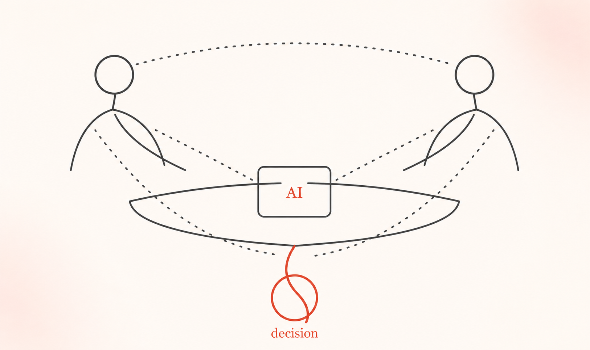

Current PhD researchAI-Supported Group Decision Making
CHI 2024 Honorable Mention Award
Logged dialogue, actions, speakers, timestamps, and triggers from the Knowledge Navigator video.
Classified each capability as common today, technically possible but uncommon, or not yet feasible.
Compared Phil and Siri through autonomy, interruption, contextual awareness, information control, and multi-human collaboration.
| Time | Actor | Speech | Action | Trigger |
|---|---|---|---|---|
| 0:34 | Phil | You have three messages: your research team, a student requesting an extension, and your mother. | Phil speaks with lifelike mouth movements. | Mike opens the KN tablet and authenticates. Phil begins with message review. |
| 0:47 | No actor specified | No speech | Mike taps Phil to make him stop talking. | Mike had a new thought, presumably based on mention of father. |
| 0:49 | Mike | Surprise birthday party next Sunday. | Mike adds a calendar event. Phil does not acknowledge. | Phil may or may not encode the party as for Mike's father. |
An example from the spreadsheet used to document and code dialogue, actions, and triggers.
Two-way auditory exchange makes dialogue the primary channel for coordinating the interaction.
Mike’s haptic actions stop or redirect Phil, giving the user a direct way to manage agent behavior.
Phil’s displays complement speech, letting the agent communicate without relying on dialogue alone.
| Capability | Phil Knowledge Navigator | Siri |
|---|---|---|
| Team type | Single agent / multi-human | Single agent / single human |
| Agent type | Companion, advisor | Companion |
| Intelligence level | Operator state responsive, operator predictive | Context responsive |
| Autonomy level | Assistant, associate, partner | Servant, assistant |
| Control mode | Agent-initiated, adaptive | Supervisory |
| Interdependence | High | Low |
| Interaction | Dialogue level | Direct input |
| Timing | Real time | Turn-based |
Product consequence: A collaborative agent must maintain context and coordinate across people, not simply respond to isolated commands.
The analysis identified 26 capabilities and grouped their constraints around privacy, social context, trust, and technical limitations.
| Power dimension | Phil Knowledge Navigator | Siri |
|---|---|---|
| Information-sharing prowess and initiative | Higher | Lower |
| Appropriate and accepted interruption | ||
| Awareness of user preferences | ||
| Interaction skills with non-human entities | ||
| Business model | Novel | Established |
Product consequence: Increasing autonomy must be paired with transparent boundaries that let people understand and adjust the agent’s control.
The paper produced a research roadmap spanning privacy, social and situational fit, trust and perceived reliability, technical feasibility, and the business case. It also identified a need for language that describes these agents without forcing them into human social-role metaphors.
